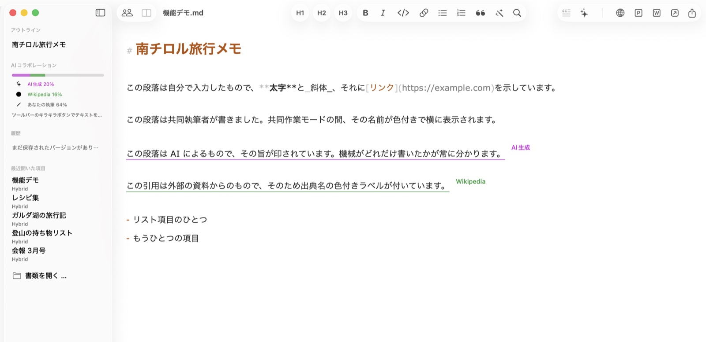
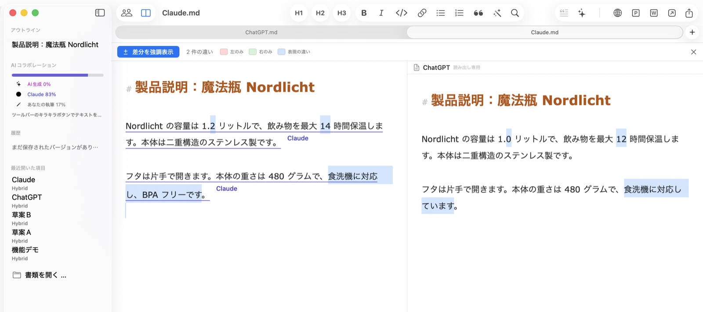
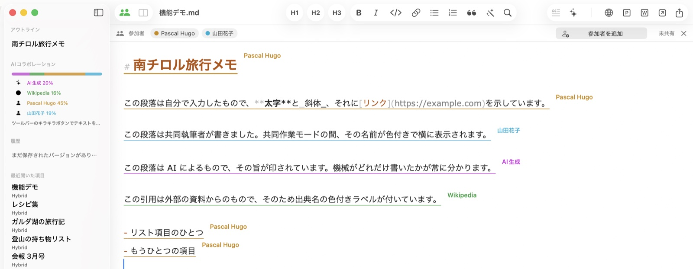
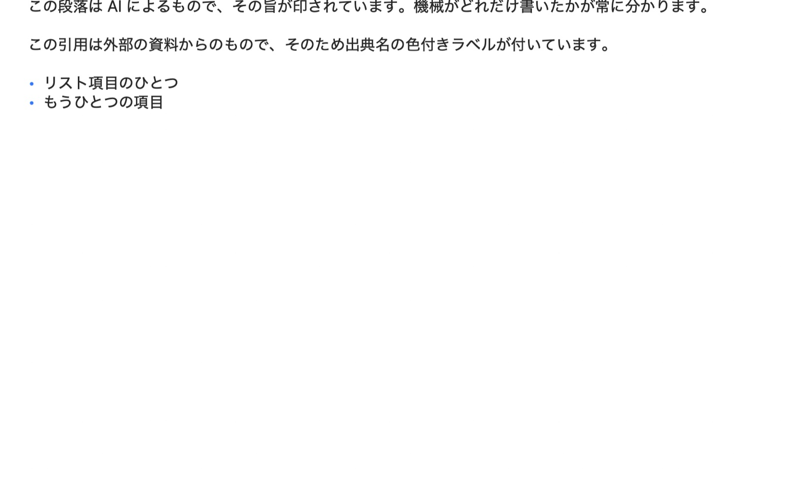

ワンクリックのオンライン公開
ドキュメントを画像埋め込み済みの整形HTMLとしてコピー。WordPressなどのCMSにそのまま貼り付けられます。画像はあるべき場所に表示され、リンク切れになりません。
Hybrid for macOS
Hybridはすべての文章の由来を記録します。自分で書いたのか、AIが生成したのか、名前付きの出典からの引用か、同僚の寄稿か。PR、マーケティング、代理店、編集部 — 「公開する人」のためのエディタです。
近日登場 HybridはまもなくiPhoneとiPadにも登場します。

すべての文章はその由来を持ち、保存・共有・共同編集を経ても保たれます。記録は普通の.mdファイルの中を旅し、他のどのエディタでも開けます。ラベルはテキストの上に浮かび、書き出しには一切含まれません。
この段落はあなたが入力したもの — 書いたものは自動的にあなたのものとして数えられます。
この文章はAIによるもので、マークされているため、機械の割合が常に見えます。AI生成
この引用は外部の出典からのもので、その名前が小さなラベルとして付いています。Wikipedia
中心となる約束：誰かが寄稿したものは、後からアクセス権が取り消されても、その人のものとして記録され続けます。由来は「誰が書いたか」の記録であり、「誰に今権限があるか」の記録ではありません。
同じ質問を2つのAIツールに投げると、回答は一見同じに見えます。Hybridは相違点を正確にハイライトし、その数を数えます。それぞれの回答にツール名を出典として付ければ、統合した後もどの文がどちら由来か分かります。

iCloud Drive経由でドキュメントを共有すると、各文章に執筆者の名前が色付きラベルで表示されます。他の人の変更は数秒で反映され、カーソルやスクロール位置はずれません。招待はAppleの共有ウインドウから — 連絡先、メール、メッセージで。

見出し、リスト、本物の表、埋め込み画像を、読者が目にする形でレンダリング。プレビューは専用ウインドウで入力にライブで追従します。CMSに入れる前の確認に最適です。

ドキュメントを画像埋め込み済みの整形HTMLとしてコピー。WordPressなどのCMSにそのまま貼り付けられます。画像はあるべき場所に表示され、リンク切れになりません。
テキストをワンクリックでChatGPT、Claude、Perplexity、または任意のアプリへ。AI箇所をマークし、各参加者の割合をサイドバーで確認できます。
ドキュメントはどのエディタでも開ける純粋な.mdファイル。Hybridが追加で知っていること — 由来、バージョン、執筆者 — は、たった1つの見えないコメントとして旅します。
写真をテキストにドロップすると、リサイズ・変換され、Markdown参照として挿入されます。CSVやExcelファイルは整形された表になります。
Hybridは執筆中に自動で途中経過を保存します。どの状態も表示・復元でき、後から気が変わっても何も失われません。
アプリを即座に、または無操作後に自動でロック。ロックは完全です：全ウインドウが隠れ、書き出しも無効に — Touch IDで解除するまで。
人と機械、複数の手からテキストが生まれる場所ならどこでも、Hybridは由来を明確に保ちます。
AIの支援でプレスリリースを起草しながら、すべての引用を検証可能に保ちます。「人間が書いたのはどこか」と問われたとき、ドキュメントが答えを持っています。透明性を後付けではなく、仕事の進め方に。
多くの書き手、ひとつの声。各自の割合を確認し、草稿を並べて比較し、整ったHTMLをどのCMSにも引き渡せます。コンテンツワークフロー全体をMacで。
自分の言葉を、出典やAIの提案から切り分けます。名前付きの出典は、推敲・バージョン・共同編集を経ても、各段落に付いたままです。
AIと共同執筆したレポートには監査証跡が必要です。Hybridは誰が — 何が — 各文章を書いたかを記録し、Touch IDロックが機密の草稿を守ります。
モデルの出力を並べて比較し、ドキュメントのAI割合を測り、プロンプトと結果をクリーンなMarkdownとして保存 — どのツールでも読めます。
MarkdownからCMSへワンクリック：画像があるべき場所に埋め込まれた整形HTML。さらにPDF、Word、純粋なMarkdownへの書き出しも。
HybridはまもなくiOSに登場します。同じドキュメント、同じ由来を、ポケットの中に。それまでも、ファイルはiCloud Drive内の純粋なMarkdownとして、どのデバイスでも読めます。
Hybridは9言語に対応：日本語、英語、ドイツ語、フランス語、スペイン語、イタリア語、ポルトガル語、オランダ語、簡体字中国語 — このサイトも同様です。
Hybrid for Mac — 人とAI、そして公開するすべてのもののためのMarkdownエディタ。
macOS 13（Ventura）以降 · Apple Silicon & Intel